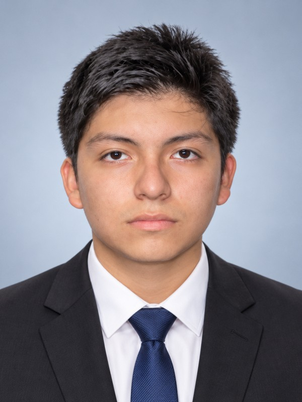
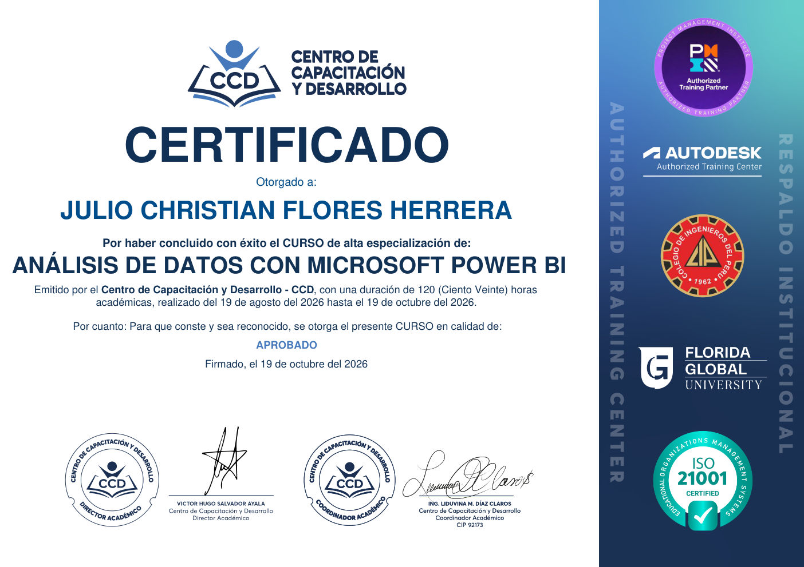
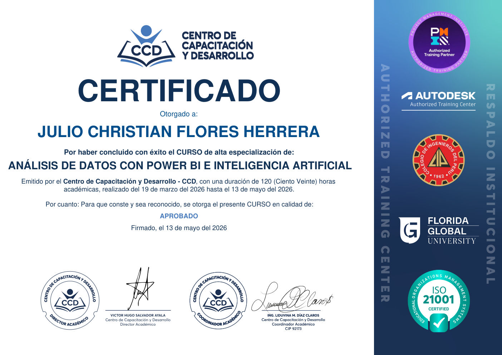
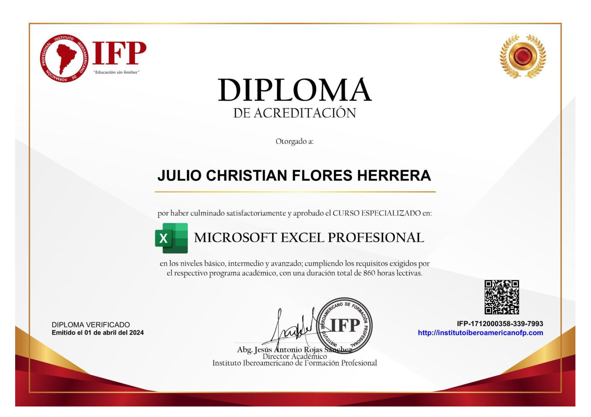
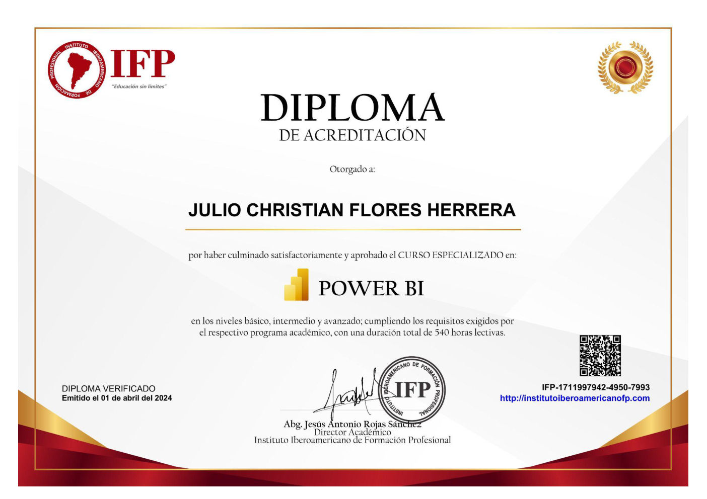
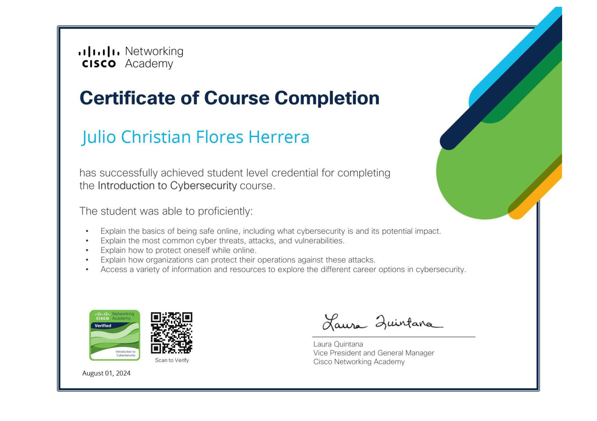
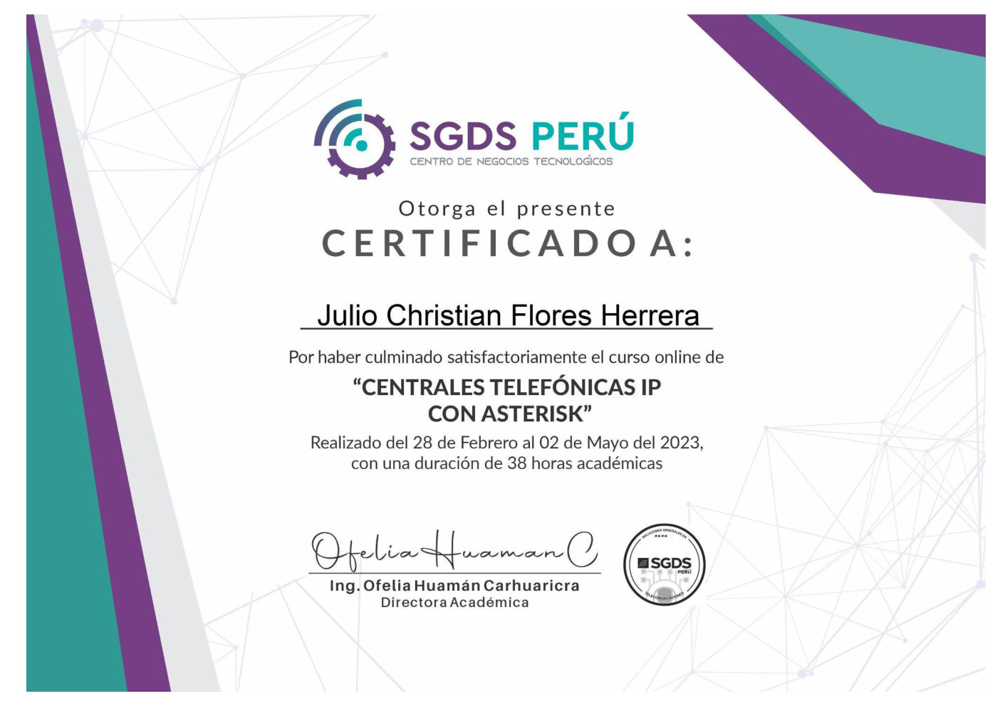
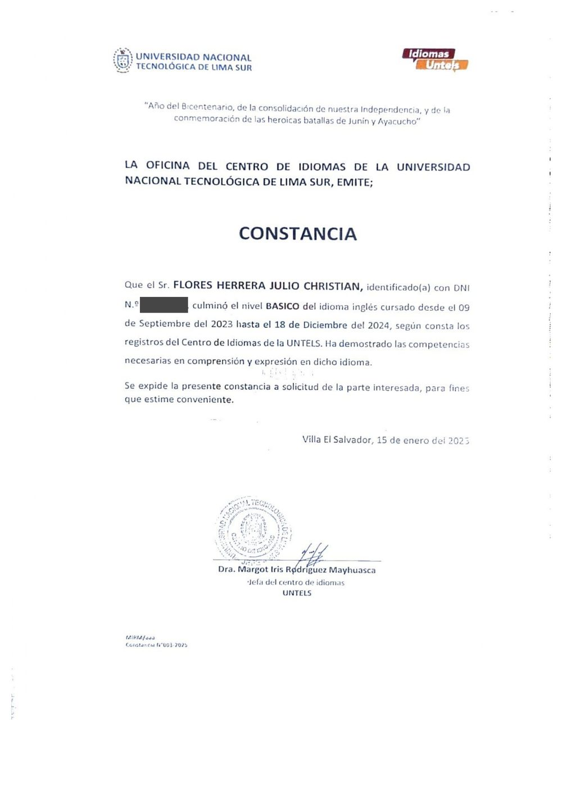

Julio Christian Flores Herrera

- Correojuliochroli@gmail.com
- Celular+51 928 248 648
- UbicaciónVilla El Salvador, Lima
- CV webjuliolfh.github.io/CV_PERSONAL
Perfil profesional
Analista de Datos orientado a Business Intelligence, con experiencia en Power BI, SQL Server, Python, ETL y Django. Especializado en integrar múltiples fuentes, automatizar procesos y construir soluciones para análisis y gestión. He desarrollado dashboards para Ventas, Producción, Logística, Contabilidad, Finanzas y Calidad, con foco en optimizar procesos, tener la información disponible a tiempo y apoyar la toma de decisiones.
Experiencia profesional
Analista de Datos
mar. 2026 – set. 2026Plataforma de Gestión y Visualización de BI
Django · SQL Server- Plataforma web interna para administrar reportes, datos, usuarios, respaldos y la distribución de la información.
- Consolidación de fuentes, dashboards y reportes en una solución centralizada para la gestión y la toma de decisiones.
Dashboards Corporativos por Área
Power BI · DAX · Power Query- Desarrollo y mantenimiento de más de 15 dashboards para Ventas, Producción, Logística, Contabilidad, Finanzas, Calidad y otras áreas.
- Diseño de modelos de datos, medidas DAX y transformaciones con Power Query para integrar información de diversas fuentes.
Integración y Automatización de Datos (ETL)
Python · SAP R3 · Odoo · Metrics- Procesos ETL que integran SAP R3, APIs de Odoo, Metrics y otras fuentes.
- Extracciones incrementales que eliminaron procesos manuales de 3 a 5 horas y llevaron la actualización de la información de 1 a 3 veces al día.
- Scraping sobre SAP R3 ante la falta de acceso directo, automatizando la obtención de datos para procesos analíticos.
Base de Datos Analítica
SQL Server- Administración y modelado de bases de datos para almacenamiento, históricos, integración y explotación de la información.
Analista Comercial
ene. 2025 – feb. 2026Dashboards Comerciales de Ventas e Inventarios
Power BI · Excel · SQL- Desarrollo y mantenimiento de dashboards interactivos de ventas e inventarios.
- Administración y modelado de información proveniente de Excel, SQL y otras fuentes.
Control de KPIs Comerciales
Power BI · Excel- Indicadores y herramientas de control para campañas, promociones y estrategias comerciales.
- Análisis de resultados y reportes de soporte a la gestión comercial.
Experiencia anterior
Analista TI · Alimentos de Exportación S.A.C. – ALIEX (Walibí · Libby's · Paraíso Tropical)ene. 2024 – dic. 2024
Consultas y Reportes en SAP Business One: desarrollo de queries (consultas SQL) en SAP B1 solicitadas por las diferentes áreas, e informes, reportes y automatizaciones según requerimientos.
Plataforma para Mantenimiento, Ventas y Calidad: creación de una plataforma basada en los ítems (artículos) de SAP Business One, con conexión directa a la base de datos SAP HANA.
Soporte y Mejora Continua: soporte a las áreas e instalaciones de TI, seguimiento de solicitudes y participación activa en los proyectos de TI.
Practicante de Sistemas · Alimentos de Exportación S.A.C. – ALIEXset. 2023 – dic. 2023
Desarrollo e Informes: programación y elaboración de informes para la dirección.
Soporte Técnico: mantenimiento de computadoras, apoyo en proyectos y atención a diversas áreas de la empresa.
Analista de Sistemas · IMFCA Contactoene. 2023 – jun. 2023
Reportes Directivos: elaboración de informes para la dirección y ejecución de proyectos.
Mejora de Procesos: propuesta e implementación de mejoras y atención rápida de consultas internas.
Analista de Sistemas · Telesto Developmentjul. 2022 – dic. 2022
Gestión de Bases de Datos: administración de bases de datos y documentación.
Proyectos de Innovación: cumplimiento de tareas estratégicas y participación en proyectos, con atención al cliente.
Practicante de Sistemas · Telesto Developmentmar. 2022 – jun. 2022
Desarrollo e Informes: programación y elaboración de informes para la dirección.
Soporte Técnico: mantenimiento de computadoras y apoyo en proyectos y solicitudes de varias áreas.
Formación académica
Bachiller en Ingeniería de Sistemas
2025Ingeniería de Sistemas (pregrado)
2019 – 2024Secundaria completa
2014 – 2018Habilidades técnicas
- BI
- Power BI, DAX, Power Query, modelado de datos, visualización
- Datos
- SQL Server, MySQL, administración y consultas SQL
- ETL
- Extracción incremental, transformación, integración y automatización
- Programación
- Python, PHP, Java, JavaScript · Framework Django
- Sistemas
- SAP Business One (queries, reportes, base de datos SAP HANA), SAP R3, APIs de Odoo, APIs de Metrics
- Web
- HTML, CSS, plataformas internas
- Habilidades blandas
- Adaptabilidad, independencia, integridad, liderazgo
Capacitaciones y certificaciones
- Business Intelligence con SQL Server · Centro de Capacitación y Desarrollo (CCD) · 120 h2026
- Análisis de Datos con Microsoft Power BI · Centro de Capacitación y Desarrollo (CCD) · 120 h2026
- Análisis de Datos con Power BI e Inteligencia Artificial · Centro de Capacitación y Desarrollo (CCD) · 120 h2026
- Microsoft Excel Profesional · Instituto Iberoamericano de Formación Profesional · 860 h2024
- Power BI (básico a avanzado) · Instituto Iberoamericano de Formación Profesional · 540 h2024
- Introduction to Cybersecurity · Cisco Networking Academy2024
- Centrales telefónicas IP con Asterisk · SGDS Perú · 38 h2023
Idiomas
- Español: nativo
- Inglés: básico (Centro de Idiomas UNTELS)
Anexos: grado académico y certificados

Análisis de Datos con Power BI · CCD
Power BI e Inteligencia Artificial · CCD
Excel Profesional · IFP
Power BI · IFP
Ciberseguridad · Cisco
Asterisk · SGDS Perú
Inglés básico · Centro de Idiomas UNTELS